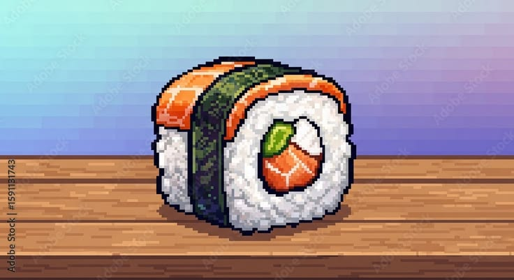

Sushi
INGREDIENTES
- Arroz - 2 xícaras
- Vinagre de arroz - 2 colheres (sopa)
- Açúcar - 1 colher (sopa)
- Sal - 1 colher (chá)
- Alga nori - 2 folhas
- Peixe (Salmão ou atum) - 2 folhas
- Pepino - 1 unidade
- Wasabi - a gosto
INGREDIENTES

Cozido em panela com água até ficar pronto para uso.
Cortado na tábua antes de montar o prato.
Usada como base para enrolar o sushi.